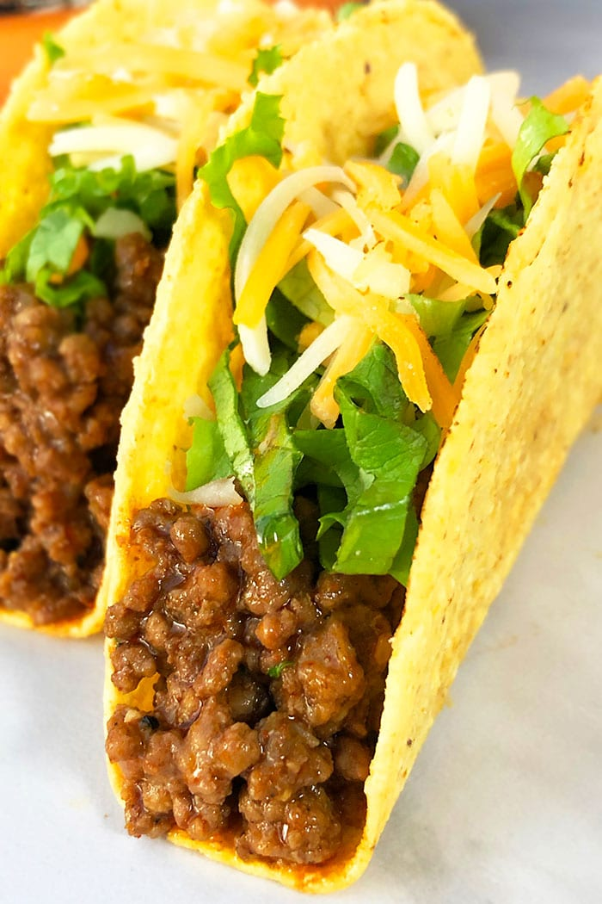

Tacos

Description
The best, quick and easy ground beef tacos recipe, homemade with simple ingredients in one pot over stovetop in 30 minutes. Loaded with Mexican taco seasoning. Also known as taco meat.
Today’s recipe is a go-to meal for weeknights or Taco Tuesday and even game day.
Ingredients
- 1 pound Ground beef
- 1/4 cup Onions, Finely chopped
- 2 tbsp Tomato paste
- 3 tbsp Taco seasoning
- Salt, To taste
- Pepper, To taste
- 2/3 cup Water
- 8 Hard taco shells
- Toppings, Lettuce, cheese, onions, tomatoes, salsa, guacamole e.t.c.
Steps
- Brown ground beef over medium-high heat in a nonstick pot or pan until no longer pink.
- Drain fat.
- Add onions, tomato paste, taco seasoning, salt, pepper, water and mix until combined.
- Reduce heat to Low and cook uncovered until beef is tender and excess liquid is reduced and meat mixture is thickened to your desired consistency.
- Spoon mixture in taco shells and add toppings of your choice.
- Serve immediately and enjoy!
HOME